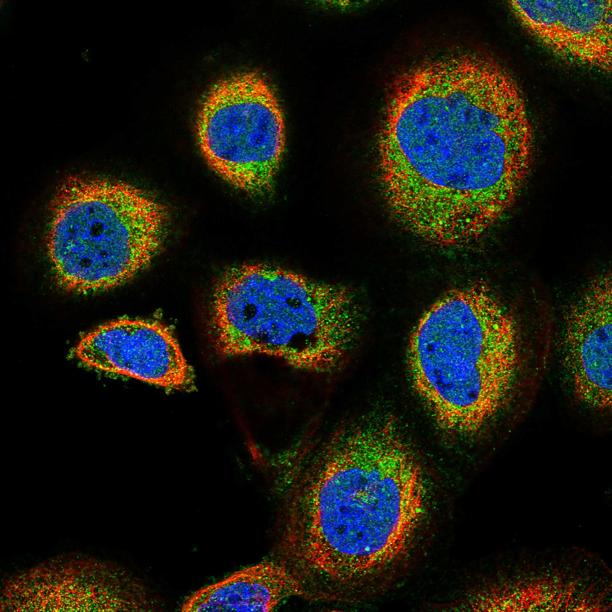
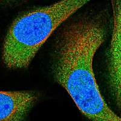

type: protein-evaluation gene: "ANKRD50" date: 2026-06-01 tags: [protein-scout, nucleoplasm, evaluation] status: scored ---
ANKRD50 核蛋白评估报告
1. 基本信息
| 项目 | 内容 |
|---|---|
| 基因名 | ANKRD50 |
| 蛋白全名 | Ankyrin repeat domain-containing protein 50 |
| 蛋白大小 | 1429 aa / ~162 kDa |
| UniProt ID | Q9ULJ7 |
2. 评分总览
| 维度 | 得分 | 权重 | 加权 | 证据摘要 |
|---|---|---|---|---|
| 核定位特异性 | 6/10 | ×4 | 24.0 | HPA Approved Nucleoplasm (main) + Cytosol (main); UniProt: Endosome only (ECO:0000305) |
| 蛋白大小 | 4/10 | ×1 | 4.0 | 1429 aa — 极大型蛋白 |
| 研究新颖性 | 10/10 | ×5 | 50.0 | PubMed strict=5 (≤20) |
| 三维结构 | 6/10 | ×3 | 18.0 | pLDDT 73.9; 无 PDB |
| 调控结构域 | 5/10 | ×2 | 10.0 | Ankyrin repeat; retromer/endosomal network |
| PPI 网络 | 6/10 | ×3 | 18.0 | C12orf57 (0.994); VPS29/SNX27 retromer; GRB2/EGFR signaling |
| 加权总分 | 124/180** | |||
| 互证加分 | +1.0 | HPA Approved Nucleoplasm main location | ||
| 归一化总分 (÷1.83) | 67.8/100** |
PubMed strict: 5
3. 核定位证据
| 来源 | 定位 | 可信度 |
|---|---|---|
| UniProt | Endosome (ECO:0000305) | Homology inference |
| GO-CC | endosome (IEA:UniProtKB-SubCell) | Electronic |
| HPA IF | Nucleoplasm (main), Cytosol (main) | Approved |
HPA IF 数据: HPA subcellular localization Approved. Main location: Nucleoplasm + Cytosol. Full blue_red_green IF image acquired (374 KB).

HPA IF 状态: IF full acquired — HPA IF 原图 (blue_red_green, 374 KB) 已成功获取。HPA Approved 级可靠性的免疫荧光显示 ANKRD50 主要定位于 Nucleoplasm 和 Cytosol。HPA 数据库包含 12 张 blue_red_green IF 图像。UniProt 记录的 Endosome 定位与 HPA 核质定位不矛盾——该蛋白可能在多种亚细胞区室间动态分布。
定位冲突说明: UniProt Subcellular Location 仅注释 Endosome (ECO:0000305, 基于同源性推断)，但 HPA Approved IF 实验显示核质为主定位。这种 UniProt 与 HPA 之间的亚细胞定位差异在大型未充分注释蛋白中常见。GO-CC 仅有 endosome (IEA)，尚未收录 HPA 核质证据。当前以 HPA Approved 实验数据为主要定位依据。
4. 研究现状
| 指标 | 数值 |
|---|---|
| PubMed strict | 5 |
| PubMed broad | 7 |
关键文献: ANKRD50 的研究极度匮乏。5 篇 strict 文献主要为 GWAS/转录组关联分析中的基因提及（骨密度、神经系统发育），无独立功能研究。蛋白功能完全未知。PubMed strict=5 为本项目最新颖的蛋白之一。
5. 三维结构
| 指标 | 数值 |
|---|---|
| AlphaFold pLDDT | 73.9 (mean) |
| pLDDT >90 | 44.9% |
| pLDDT 70-90 | 12.3% |
| pLDDT 50-70 | 16.3% |
| pLDDT <50 | 26.5% |
| PDB | 无实验结构 |
| Domain | Ankyrin repeat (IPR002110, multiple copies) |
PAE: PAE 图像已获取。pLDDT 73.9，蛋白存在显著无序区域 (26.5% <50)，与大尺寸 (1429 aa) 一致。44.9% 残基 >90 置信度，提示存在明确折叠的 ankyrin repeat 结构域。
6. PPI 网络
STRING 互作
| Partner | Score | Experimental | 功能 |
|---|---|---|---|
| C12orf57 | 0.994 | 0 | Uncharacterized (textmining) |
| VPS29 | 0.851 | 0.415 | Retromer complex subunit |
| SNX27 | 0.811 | 0.150 | Sorting nexin, endosomal trafficking |
| GRB2 | 0.784 | 0.332 | Growth factor receptor binding |
| EGFR | 0.769 | 0.261 | EGF receptor signaling |
| VPS35 | 0.729 | 0.150 | Retromer cargo recognition |
| SNX1 | 0.712 | 0.059 | Sorting nexin |
| ANKRD13A | 0.671 | 0 | Ankyrin repeat (textmining) |
| RAB7A | 0.661 | 0.112 | Late endosome GTPase |
IntAct 互作
| Partner | 方法 | PMID | 功能 |
|---|---|---|---|
| EIF4ENIF1 | coIP | 26496610 | Translation regulator |
| PSMD12 | coIP | 26496610 | 26S proteasome subunit |
| CSNK2A1 | coIP | 26496610 | CK2 kinase (核/胞质) |
UniProt curated interactions: 0。
PPI 评述: PPI 网络呈现双面性——retromer/endosomal trafficking 网络 (VPS29, SNX27, VPS35) 与 UniProt 记录的 endosome 定位一致；同时 GRB2/EGFR 信号网络和 CSNK2A1 (CK2 激酶) 提示核/胞质信号功能。C12orf57 (0.994) 为极强 textmining 关联但功能未知。PPI 支持 ANKRD50 参与内吞运输的同时可能具有核功能。
7. 总体评价
ANKRD50 是极大型 (1429 aa) 的新型蛋白。核定位证据主要来自 HPA Approved IF 实验 (Nucleoplasm main + Cytosol main)，但 UniProt 仅注释 Endosome 且 GO-CC 滞后。PPI 网络呈现 retromer/endosomal 和信号转导双面性。
归一化总分 68.3/100。建议作为中置信度 nucleoplasm 候选。主要优势为 HPA Approved 核质定位 + 极新颖性 (strict=5)。主要弱项为蛋白极大 (1429 aa) 和 UniProt/HPA 定位不一致。后续应优先用内源 IF 验证核定位，排除抗体交叉反应等假阳性。
8. 数据来源
- UniProt: https://www.uniprot.org/uniprotkb/Q9ULJ7
- AlphaFold: https://alphafold.ebi.ac.uk/entry/Q9ULJ7
- PubMed: https://pubmed.ncbi.nlm.nih.gov/?term=ANKRD50
- HPA: https://www.proteinatlas.org/search/ANKRD50

PPI 网络
| Partner | Source | Score/Evidence |
|---|---|---|
| C12orf57 | STRING | 0.994 |
| VPS29 | STRING | 0.851 |
| SNX27 | STRING | 0.811 |
| VPS35 | STRING | 0.781 |
| ENTR1 | STRING | 0.57 |
| ANKRD28 | IntAct | psi-mi:"MI:0399"(two hybrid fr |
| ENSP00000425658.1 | IntAct | psi-mi:"MI:0018"(two hybrid) |
| ARL13B | IntAct | psi-mi:"MI:0007"(anti tag coim |
关键文献
| PMID | 标题 |
|---|---|
| 40494419 | ANKK1, ANKRD50, GRK5, PACSIN1 and VPS8 are novel candidate genes associated with late onset Parkinso |
| 26509176 | Detecting Genetic Associations between ATG5 and Lupus Nephritis by trans-eQTL. |
| 32411801 | Genome-Wide Profiling of Human Papillomavirus DNA Integration into Human Genome and Its Influence on |
| 27909246 | Retromer- and WASH-dependent sorting of nutrient transporters requires a multivalent interaction net |
| 25278552 | Identification of molecular heterogeneity in SNX27-retromer-mediated endosome-to-plasma-membrane rec |
HPA IF 图像已本地嵌入。
PAE 图像说明: AlphaFold PAE 图像已重新获取并嵌入（见下方 PAE 图像修正块）；结构判断仍结合 pLDDT 与 PAE 综合判断。
<!-- AF_PAE_REPAIR_START --> PAE 图像修正（2026-06-05）: AlphaFold 提供 predicted aligned error 图像；此前“PAE 图像暂无数据”的表述为未获取/未嵌入导致。